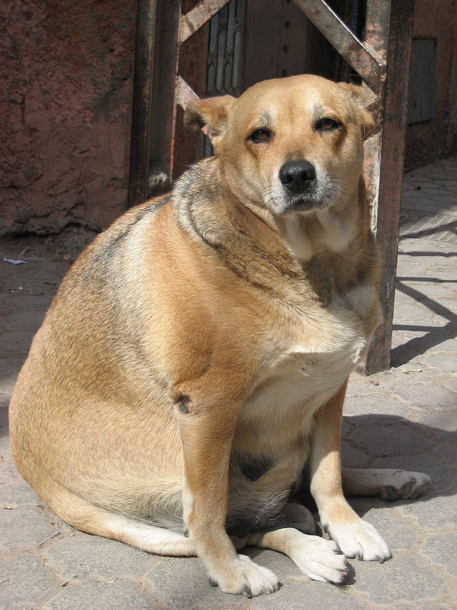
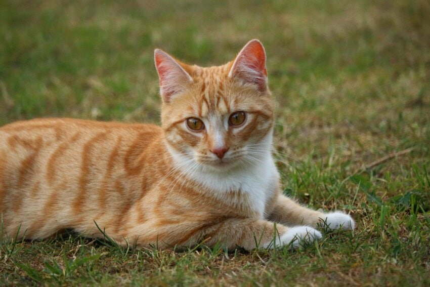

¡Adopta un amigo para toda la vida!
Historias de Rescate

Max
Max fue rescatado de la calle. Ahora busca un hogar amoroso.

Luna
Luna es juguetona y cariñosa. Está lista para su nueva familia.

Rexo
Rexo necesita un hogar con espacio para dar su amor y jugar.
Preguntas Frecuentes sobre Adopción
¿Cuáles son los requisitos para adoptar?
Los requisitos varían según el refugio, pero generalmente necesitas ser mayor de edad, tener un hogar adecuado y la capacidad para cuidar del animal.
¿Qué tipos de animales están disponibles para adopción?
En general, puedes encontrar perros, gatos y, a veces, otros animales como conejos o aves. Consulta nuestro sitio para ver la lista actualizada.
¿Hay algún costo asociado con la adopción?
Sí, la mayoría de los refugios cobran una tarifa de adopción que ayuda a cubrir los costos de atención médica y mantenimiento de los animales.